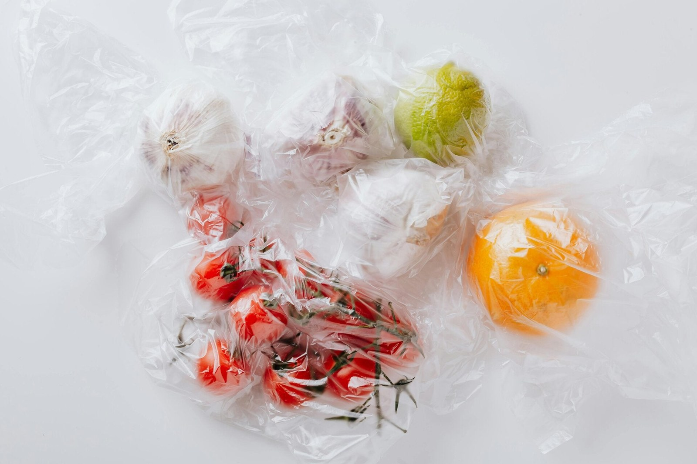
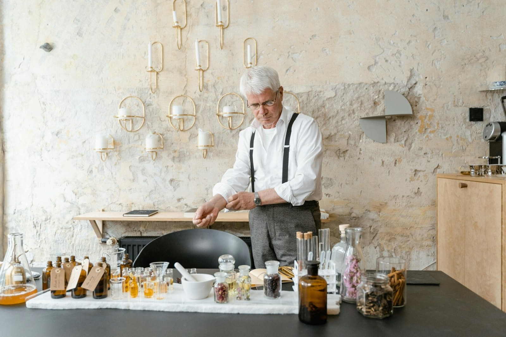
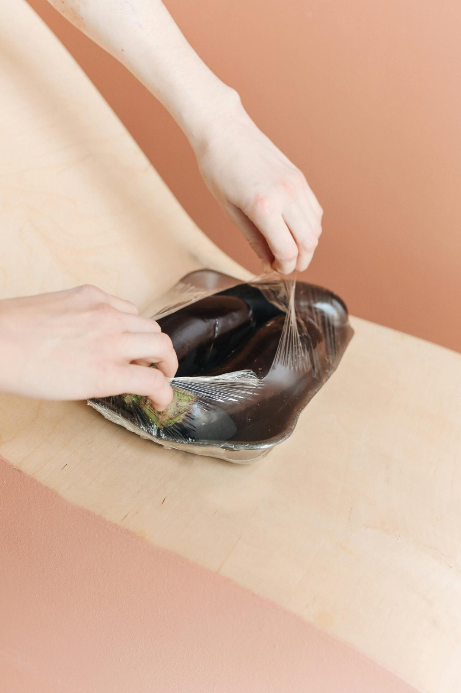

DAVID GUEZET · LA PART DU CHEF
Conseils & cuisine sous vide
Conseiller Culinaire
cuisson et conservation sous vide
Découvrez les secrets de la cuisson et de la conservation sous vide, une technique culinaire qui transforme votre manière de cuisiner. Que vous soyez un professionnel de la restauration ou un particulier passionné, David Guezet vous partage son expertise pour des résultats parfaits à chaque fois.

Pourquoi adopter la cuisson sous vide ?
La cuisson sous vide est bien plus qu'une simple technique, c'est une révolution pour la préservation et la préparation de vos aliments. Elle permet de prolonger considérablement la durée de vie de vos produits, de préserver leurs saveurs intenses et leurs textures délicates, et d'obtenir une cuisson d'une précision et d'une reproductibilité inégalées. C'est également un atout majeur pour mieux organiser votre production, anticiper vos repas et garantir une régularité de qualité. Attention, le sous vide stabilise mais ne stérilise pas ; une hygiène rigoureuse et le respect de la chaîne du froid restent essentiels.

L'expertise de Chef Privé à votre service
Avec 30 ans d'expérience en cuisine provençale et une connaissance approfondie des produits locaux, Chef Privé maîtrise parfaitement les techniques de cuisson et conservation sous vide. Cette expertise me permet de vous guider à travers chaque étape, du choix des produits à leur remise en température, en passant par le conditionnement et la cuisson. Mon savoir-faire garantit que chaque étape est exécutée avec précision pour des résultats optimaux.

Les étapes clés pour une maîtrise parfaite
Que ce soit pour les professionnels ou les particuliers, je vous guide à travers les étapes essentielles pour réussir votre sous vide :
- Réception & préparation : Vérifiez la DLC, la température et l'agrément CEE. Parez, lavez et portionnez vos produits avec soin. Organisez votre poste de travail efficacement.
- Conditionnement : Choisissez le sac adapté, mettez sous vide (vide partiel ou poussé) et vérifiez toujours la soudure.
- Cuisson : Cuisinez à la température cible en utilisant une sonde désinfectée. Notez le temps et la température pour une traçabilité optimale.
- Refroidissement : Utilisez une cellule de refroidissement ou de l'eau glacée pour atteindre une température inférieure à 10°C en moins de 2 heures, idéalement 3-4°C.
- Stockage : Conservez entre 0-4°C, avec un étiquetage complet et une traçabilité rigoureuse dans votre PMS (Plan de Maîtrise Sanitaire).
- Remise en température : Chauffez de 10°C à 63°C en moins d'une heure, ou servez froid selon la recette.
Des bénéfices concrets pour tous
L'adoption de la cuisson et de la conservation sous vide offre des gains significatifs de coût et de temps, ainsi qu'une facilité organisationnelle remarquable. Ces conseils s'adressent aussi bien aux professionnels de la restauration soucieux d'optimiser leur production, qu'aux particuliers désireux de mieux cuisiner à la maison. Chef David, basé à Isle sur la Sorgue, vous apporte son savoir-faire pour transformer votre quotidien culinaire.
Contact